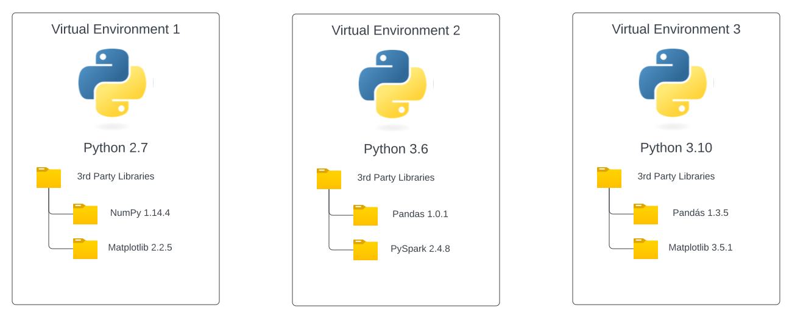

<!DOCTYPE html>
<html lang="en">
  <head>
    <meta charset="utf-8" />
    <meta name="viewport" content="width=device-width, initial-scale=1.0, maximum-scale=1.0, user-scalable=no" />

    <title></title>
    <link rel="stylesheet" href="dist/reveal.css" />
    <link rel="stylesheet" href="dist/theme/black.css" id="theme" />
    <link rel="stylesheet" href="plugin/highlight/zenburn.css" />
	<link rel="stylesheet" href="css/layout.css" />
	<link rel="stylesheet" href="plugin/customcontrols/style.css">
	<link rel="stylesheet" href="plugin/chalkboard/style.css">


    <script defer src="dist/fontawesome/all.min.js"></script>

	<script type="text/javascript">
		var forgetPop = true;
		function onPopState(event) {
			if(forgetPop){
				forgetPop = false;
			} else {
				parent.postMessage(event.target.location.href, "app://obsidian.md");
			}
        }
		window.onpopstate = onPopState;
		window.onmessage = event => {
			if(event.data == "reload"){
				window.document.location.reload();
			}
			forgetPop = true;
		}

		function fitElements(){
			const itemsToFit = document.getElementsByClassName('fitText');
			for (const item in itemsToFit) {
				if (Object.hasOwnProperty.call(itemsToFit, item)) {
					var element = itemsToFit[item];
					fitElement(element,1, 1000);
					element.classList.remove('fitText');
				}
			}
		}

		function fitElement(element, start, end){

			let size = (end + start) / 2;
			element.style.fontSize = `${size}px`;

			if(Math.abs(start - end) < 1){
				while(element.scrollHeight > element.offsetHeight){
					size--;
					element.style.fontSize = `${size}px`;
				}
				return;
			}

			if(element.scrollHeight > element.offsetHeight){
				fitElement(element, start, size);
			} else {
				fitElement(element, size, end);
			}		
		}


		document.onreadystatechange = () => {
			fitElements();
			if (document.readyState === 'complete') {
				if (window.location.href.indexOf("?export") != -1){
					parent.postMessage(event.target.location.href, "app://obsidian.md");
				}
				if (window.location.href.indexOf("print-pdf") != -1){
					let stateCheck = setInterval(() => {
						clearInterval(stateCheck);
						window.print();
					}, 250);
				}
			}
	};


        </script>
  </head>
  <body>
    <div class="reveal">
      <div class="slides"><section  data-markdown><script type="text/template"><p style="line-height: 0" class="reset-paragraph image-paragraph"></img></p>

</script></section><section  data-markdown><script type="text/template">
## What is Python?

Python is one of the most popular and fastest growing programming languages in the world. It currently makes up about 20% of all [pushes](https://madnight.github.io/githut/#/pushes/2022/1) on github and about 17% of all the [pull-requests](https://madnight.github.io/githut/#/pull_requests/2022/1).
</script></section><section  data-markdown><script type="text/template">
## Uses for Python

- Web-Apps
- Scripts for automation
- Building machine-learning algorithms
- Implementing neural networks
- Data-Science
</script></section><section  data-markdown><script type="text/template">
## Advantages

- Simple, easy to learn syntax
- Runs on all platforms
- Big ecosystem with plenty of community-packages
- Plenty of tutorials to learn with
</script></section><section  data-markdown><script type="text/template">
## Learning Objectives

- [ ] Explore the choices available to run Python apps
- [ ] Use the Python interpreter to execute statements and scripts
- [ ] Learn how to declare variables
- [ ] Build a Python app that takes input and produces output
</script></section><section  data-markdown><script type="text/template">
## Running Python

Python can be run via:

1. Interactive mode: feed instruction line by line to the interpreter.
2. Script mode: put instructions in `.py` file and let the interpreter run them line by line.

<p style="line-height: 0" class="reset-paragraph image-paragraph"></img></p>


source: [What is Python? - Learn | Microsoft Docs](https://docs.microsoft.com/en-us/learn/modules/intro-to-python/2-what-is-python)
</script></section><section  data-markdown><script type="text/template">
<div class="callout callout-color-default">
<div class="callout-title">
<div class="callout-icon">

<i class="fas fa-pencil-alt" ></i>

</div>
<div class="callout-title-inner">

Note

</div>
</div>
<div class="callout-content">

Most Python implementations partially compile scripts, turning the source code into _byte code_, which can run on any supported platform. This partial compile is done to improve performance for subsequent runs of the script and happens automatically. You can also generate a "compiled" version of the script and distribute an app without providing the full source code.

</div>
</div>
</script></section><section  data-markdown><script type="text/template">
## Interactive Mode - REPL

- REPL => "READ-EVALUATE-PRINT-LOOP"
- Can be accessed by just running the python binary.
</script></section><section  data-markdown><script type="text/template">
```powershell
python
```

<div class="callout callout-color-default">
<div class="callout-title">
<div class="callout-icon">

<i class="fas fa-pencil-alt" ></i>

</div>
<div class="callout-title-inner">

Output

</div>
</div>
<div class="callout-content">

Python 3.9.5 (default, May 27 2021, 19:45:35)

[GCC 9.3.0] on linux

Type "help", "copyright", "credits" or "license" for more information.

|>

</div>
</div>
</script></section><section  data-markdown><script type="text/template">
```console
>>> 1+1 
2 
>>> PI = 3.14 
>>> PI 
3.14
```
</script></section><section  data-markdown><script type="text/template">
## Variables

Declare and assign variables with the assignment operator `=`.

```python
x = 1 # assign variable x the value 1
y = x + 5 # assign variable y the value of x plus 5
z = y # assign variable z the value of y
```

<div class="callout callout-color-default">
<div class="callout-title">
<div class="callout-icon">

<i class="fas fa-pencil-alt" ></i>

</div>
<div class="callout-title-inner">

Note

</div>
</div>
<div class="callout-content">

No type-declarations necessary!

</div>
</div>
</script></section><section  data-markdown><script type="text/template">
## Variable-Naming

Variable names are case sensitive and can use any letter, number and the underscore`_` character. 

They should however not start with a number, because that way imports won't work.
</script></section><section  data-markdown><script type="text/template">
**GOOD** Variable Names:

- `programm04.py`
- `prr_p3h.py`
- `pr_ogramm_04.py`

**BAD** Variable Names:

- `01_test.py`
- `5Classes.py`
</script></section><section  data-markdown><script type="text/template">
## Numbers

There are 3 diffrent types for numbers in python.

1. Integers [0,1,2,3,4,5,6,7,8,9]
2. Floats [0.1, 0.2, 0.3, 0.5674, 0.89]
3. Complex [1j, 7j, 420j]
</script></section><section  data-markdown><script type="text/template">
## Casting Numbers

```python
number_int = 10
number_float = 1.5
number_complex = 8j

nums_to_cast = [number_int, number_float, number_complex]

for num in nums_to_cast:
  print(f"Casting {num}")
  try:
    print(int(num))
  except TypeError:
    print(str(TypeError))
  try:
    print(float(num))
  except TypeError:
    print(str(TypeError))
  try:
    print(complex(num))
  except TypeError:
    print(str(TypeError))
```
</script></section><section  data-markdown><script type="text/template">
### Casting-Direction

In python you can only cast a simpler type, into a more complex one

```console
Casting 10
10
10.0
(10+0j)
--------------------------------------------------
Casting 1.5
1
1.5
(1.5+0j)
--------------------------------------------------
Casting 8j
<class 'TypeError'>
<class 'TypeError'>
8j
```
</script></section><section  data-markdown><script type="text/template">
## Booleans

```python
x = True
print(type(x)) # outputs <class 'bool'>
```

Internally, booleans are treated as special integers.
True => 1
False => 0
</script></section><section  data-markdown><script type="text/template">
### General Advise About Types

<div class="callout callout-color-default">
<div class="callout-title">
<div class="callout-icon">

<i class="fas fa-pencil-alt" ></i>

</div>
<div class="callout-title-inner">

Note

</div>
</div>
<div class="callout-content">

"Many types are nothing more than specialized versions of more general types. Integers are a subset of floating point numbers, and Booleans are a subset of integers." - [Microsoft Docs](https://docs.microsoft.com/en-us/learn/modules/intro-to-python/4-variables)

</div>
</div>
</script></section><section  data-markdown><script type="text/template">
## Strings

A string is a collection of zero or more characters.
You can use single-, or double-quotation marks.

```python
x = "Hello World!"
print(x) # outputs: Hello World!
print(type(x)) # outputs: <class 'str'>
y = 'This is also a string!'
```
</script></section><section  data-markdown><script type="text/template">
### Concatenation

If you use the `+` operator, you can *add* strings together.

```python
x = 'Hello' + ' ' + 'World' + '!'
print(x) # outputs: Hello World!
```

There are plenty of other things we can do with strings, which we will cover later on.

[Use strings in Python - Learn | Microsoft Docs](https://docs.microsoft.com/en-us/learn/modules/python-strings/)
</script></section><section  data-markdown><script type="text/template">
## Virtual Environments
</script></section><section ><section data-markdown><script type="text/template">
### Reasons for VENV's

- Avoid polluting your global python install
- Avoid dependency conflicts
- Reproduction of the environment
- Privelege Lockouts (corporate)
</script></section><section data-markdown><script type="text/template">
<p style="line-height: 0" class="reset-paragraph image-paragraph"></img></p>

</script></section></section><section ><section data-markdown><script type="text/template">
### Creating a Virtual Environment

If Path is configured
```powershell
python -m venv .venv
```
</script></section><section data-markdown><script type="text/template">
If Path is not configured, you need to use the absolute path to the installed python executable. Find the location with this command.

```powershell
where.exe python
```
</script></section><section data-markdown><script type="text/template">
Use this command on Unix-Systems.

```bash
which python3
```
</script></section></section><section ><section data-markdown><script type="text/template">
### Activate the Environment

On Windows

```powershell
.venv\Scripts\activate
```

When done correctly:

```powershell
(venv) PS> 
```
</script></section><section data-markdown><script type="text/template">
On Unix-Systems

```bash
source .venv/bin/activate
```

When done correctly:

```
(venv) $
```
</script></section></section><section ><section data-markdown><script type="text/template">
### Installing Packages

Now you can install your packages just like you would normally. This works the same on unix and windows.

```powershell
pip install <package_name>
```
</script></section><section data-markdown><script type="text/template">
When pip is not added to Path:

```powershell
python -m pip install <package_name>
```
</script></section></section><section  data-markdown><script type="text/template">
### Deactivating the Environment

This works on Windows and Unix.

```powershell
deactivate
```
</script></section><section  data-markdown><script type="text/template">
### Tips and best Practices

- Always use Virtual Environments when working with others.
- This also includes your future-you `¯\_(ツ)_/¯`
- Keep your global Python install clean.
- Stick to the naming convention: `venv` or `.venv`
</script></section><section ><section data-markdown><script type="text/template">
### A Detailed look

```bash
.venv
├── bin
│   ├── activate
│   ├── activate.csh
│   ├── activate.fish
│   ├── Activate.ps1
│   ├── f2py
│   ├── f2py3
│   ├── f2py3.10
│   ├── pip
│   ├── pip3
│   ├── pip3.10
│   ├── python -> python3.10
│   ├── python3 -> python3.10
│   └── python3.10 -> /home/linuxbrew/.linuxbrew/opt/python@3.10/bin/python3.10
├── include
├── lib
│   └── python3.10
│       └── site-packages
│           ├── numpy
│           ├── pip-22.2.2.dist-info
│           │   ├── entry_points.txt
│           │   ├── INSTALLER
│           │   ├── LICENSE.txt
│           │   ├── METADATA
│           │   ├── RECORD
│           │   ├── REQUESTED
│           │   ├── top_level.txt
│           │   └── WHEEL
│           ├── pkg_resources
│           └── setuptools-63.4.3.dist-info
├── lib64 -> lib
└── pyvenv.cfg
```
</script></section><section data-markdown><script type="text/template">
### Include/

- Initially empty
- C header files (for C extensions)
</script></section><section data-markdown><script type="text/template">
### Lib/

- Contains `site-packages` folder, which contains installed external packages.
- Comes with `pip` and `setuptools`.
- Can contain multiple python versions.
</script></section><section data-markdown><script type="text/template">
### Scripts/ OR Bin/

- Contains all executable files for the Environment.
	- `python.exe`
	- `pip.exe`
- Also contains the activation-script for the environment.

</script></section><section data-markdown><script type="text/template">
### Pyenv.cfg

Contains important configuration in the form of key-value pairs.
</script></section></section><section ><section data-markdown><script type="text/template">
### Some useful Commands
</script></section><section data-markdown><script type="text/template">
List all installed external packages.

```powershell
(venv) PS > pip list

Package    Version
---------- -------
pip        22.0.4
setuptools 58.1.0
```
</script></section><section data-markdown><script type="text/template">
Generate a `requirements.txt` file.

```powershell
pip freeze > requirements.txt
```

This allows us to share our environment with others.

**Never** check in your virtual-environment with git!
</script></section><section data-markdown><script type="text/template">
Reinstall the dependencies:

```powershell
pip install -r requirements.txt
```

This will install all dependencies, with the same version that was used when the `requirements.txt` file was created.
</script></section></section><section  data-markdown><script type="text/template">
## Imports, Modules and Packages
</script></section><section  data-markdown><script type="text/template">
### Modular Programming

- Simplicity: Dedicating a module to a single (or a subset of...) problem makes developing solutions easier.
- Maintainability: Modules minimize interdependency and make changes easier to implement.
- Reusability: Less duplicated code.
- Scoping: Avoiding name-collisions
</script></section><section  data-markdown><script type="text/template">
### Modules
</script></section><section  data-markdown><script type="text/template">
Three types of modules:

1. Module written in python
2. Module written in C (eg. `re`)
3. Built-in modules (eg. `itertools`)
</script></section><section  data-markdown><script type="text/template">
**`mod.py`**
```python
a = 5
b = "Hello World!"
def foo(args):
  print(f"arg = {args}")
class Bar():
	pass
```

This will expose the following objects:

- a (number)
- b (string)
- foo (a function)
- bar (a class)
</script></section><section  data-markdown><script type="text/template">
```python
import mod
print(mod.a)
print(mod.b)
mod.foo()
x = mod.Bar()
x
```
</script></section><section  data-markdown><script type="text/template">
### Diffrent Styles of Import

```python
import mod # imports all; accessible with 'mod'-prefix
import mod as my_module # imports all, but renames the prefix
from mod import foo, Bar # imports only the named objects; no prefix
from mod import * # imports all without prefix; Watch out for conflicts
```
</script></section><section  data-markdown><script type="text/template">
## Installing Python from Source on Debian

As always, make sure your system is up-to-date and you have the required dependencies.

```bash
sudo apt update && sudo apt upgrade
```

```bash
sudo apt-get install -y make build-essential libssl-dev zlib1g-dev \
       libbz2-dev libreadline-dev libsqlite3-dev wget curl llvm \
       libncurses5-dev libncursesw5-dev xz-utils tk-dev
```
</script></section><section  data-markdown><script type="text/template">
### Downloading

Get the downloadlink for the newest version [HERE](https://www.python.org/downloads/source/).

```bash
wget https://www.python.org/ftp/python/3.10.7/Python-3.10.7.tgz
```
</script></section><section  data-markdown><script type="text/template">
### Unzip the Tarball

```bash
tar xvf Python-3.10.7.tgz
```
</script></section><section  data-markdown><script type="text/template">
### Configure the Build

```bash
./configure --enable-optimizations --with-ensurepip=install
```
</script></section><section  data-markdown><script type="text/template">
### Compile with make

**IMPORTANT:** Before running the command below, change the '8' to a resonable number, depending on the number of cores your cpu has.

```bash
make -s -j 8
```

<aside class="notes"><p>You can set the number to something higher, than your core-count. This takes advantage of the fact, that disk IO may slow down some threads. Your operating system task-scheduler will take care of managing the diffrent make threads (to a reasonable degree).</p>
</aside></script></section><section  data-markdown><script type="text/template">
### Install as alternative (run make beforehand)

```bash
sudo make altinstall
```
</script></section><section  data-markdown><script type="text/template">
</script></section></div>
    </div>

    <script src="dist/reveal.js"></script>

    <script src="plugin/markdown/markdown.js"></script>
    <script src="plugin/highlight/highlight.js"></script>
    <script src="plugin/zoom/zoom.js"></script>
    <script src="plugin/notes/notes.js"></script>
    <script src="plugin/math/math.js"></script>
	<script src="plugin/mermaid/mermaid.js"></script>
	<script src="plugin/chart/chart.min.js"></script>
	<script src="plugin/chart/plugin.js"></script>
	<script src="plugin/menu/menu.js"></script>
	<script src="plugin/customcontrols/plugin.js"></script>
	<script src="plugin/chalkboard/plugin.js"></script>

    <script>
      function extend() {
        var target = {};
        for (var i = 0; i < arguments.length; i++) {
          var source = arguments[i];
          for (var key in source) {
            if (source.hasOwnProperty(key)) {
              target[key] = source[key];
            }
          }
        }
        return target;
      }

	  function isLight(color) {
		let hex = color.replace('#', '');

		// convert #fff => #ffffff
		if(hex.length == 3){
			hex = `${hex[0]}${hex[0]}${hex[1]}${hex[1]}${hex[2]}${hex[2]}`;
		}

		const c_r = parseInt(hex.substr(0, 2), 16);
		const c_g = parseInt(hex.substr(2, 2), 16);
		const c_b = parseInt(hex.substr(4, 2), 16);
		const brightness = ((c_r * 299) + (c_g * 587) + (c_b * 114)) / 1000;
		return brightness > 155;
	}

	var bgColor = getComputedStyle(document.documentElement).getPropertyValue('--r-background-color').trim();

	if(isLight(bgColor)){
		document.body.classList.add('has-light-background');
	} else {
		document.body.classList.add('has-dark-background');
	}

      // default options to init reveal.js
      var defaultOptions = {
        controls: true,
        progress: true,
        history: true,
        center: true,
        transition: 'default', // none/fade/slide/convex/concave/zoom
        plugins: [
          RevealMarkdown,
          RevealHighlight,
          RevealZoom,
          RevealNotes,
          RevealMath.MathJax3,
		  RevealMermaid,
		  RevealChart,
		  RevealCustomControls,
		  RevealMenu,
		  RevealChalkboard, 
        ],

		mathjax3: {
			mathjax: 'plugin/math/mathjax/tex-mml-chtml.js',
		},
		markdown: {
		  gfm: true,
		  mangle: true,
		  pedantic: false,
		  smartLists: false,
		  smartypants: false,
		},

		customcontrols: {
			controls: [
				{id: 'toggle-overview',
				title: 'Toggle overview (O)',
				icon: '<i class="fa fa-th"></i>',
				action: 'Reveal.toggleOverview();'
				},
				{ icon: '<i class="fa fa-pen-square"></i>',
				title: 'Toggle chalkboard (B)',
				action: 'RevealChalkboard.toggleChalkboard();'
				},
				{ icon: '<i class="fa fa-pen"></i>',
				title: 'Toggle notes canvas (C)',
				action: 'RevealChalkboard.toggleNotesCanvas();'
				},
			]
		},
		menu: {
			loadIcons: false
		}
      };

      // options from URL query string
      var queryOptions = Reveal().getQueryHash() || {};

      var options = extend(defaultOptions, {"width":960,"height":700,"margin":0.04,"controls":true,"progress":true,"slideNumber":true,"transition":"slide","transitionSpeed":"default"}, queryOptions);
    </script>

    <script>
      Reveal.initialize(options);
    </script>
  </body>
</html>
